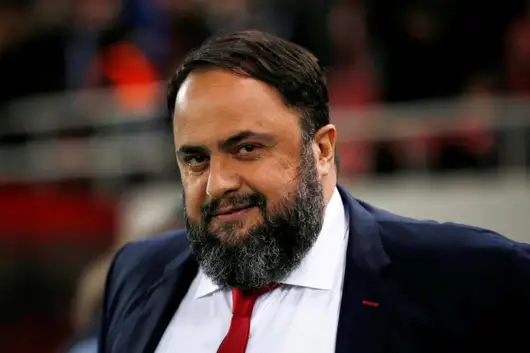

Mikel Arteta has claimed he has now recovered from coronavirus after speaking about contracting the illness for the first time.
Around 100 staff at the club – including the first-team squad – have been self-isolating since the Gunners head coach tested positive, confirmation of which triggered a chain of events which eventually led to the suspension of Premier League matches.
Arsenal were due to resume training at London Colney on March 24 but after an escalation in government measures to tackle to the spread of Covid-19 and an extension of the domestic football hiatus from April 3 to April 30, those plans have now been cancelled.
Arteta, however, believes he is now back to full health after discussing the last two-and-half weeks with Spanish television station La Sexta, a period which began with Arsenal’s Europa League last-32 exit to Olympiacos at Emirates Stadium.
I’m very well now, I feel that I have recovered,
said the 37-year-old.It took me three or four days to start feeling much better and with more energy, to leave the symptoms behind and now, the truth is that I feel very well.
After playing Olympiacos on April 5, Arsenal travelled to Portsmouth for an FA Cup tie. Four Pompey players have tested positive since the Gunners’ 2-0 win with the League One club waiting for the outcome of further tests.
Everything happened very fast,
said Arteta. On [the] Tuesday afternoon I was feeling so-so and I went to see the doctor but he wasn’t there.
I got a call from the board of directors after training while I was in my car and they told me that the president of Olympiacos [Evangelos Marinakis] had tested positive and everyone that had been in contact was at risk.
I went on to tell them that I wasn’t feeling well and that we had a situation because we had lots of players that had been in contact with them [Olympiacos]. We had a game against Manchester City the next day and obviously we couldn’t put lots of people at risk without saying anything.

I had the test done last Wednesday and I was diagnosed on Friday, when we had to communicate it to the Premier League that I had tested positive.
Obviously all those that had been in contact with me had to go into quarantine, and consequently, games had to be suspended.